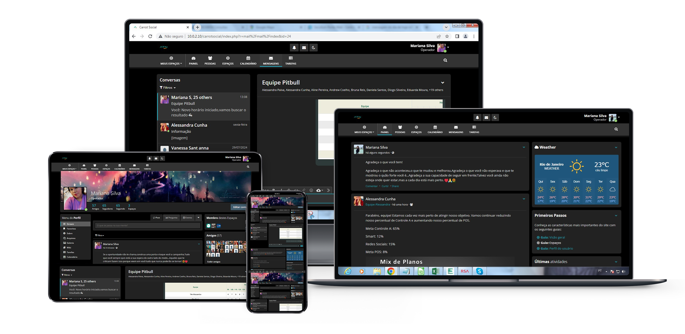

Projeto I.S.C - Intranet Social Corporativa
- Por: Thalys Matheus de Aguiar.
- EMPRESA: Atn Contact Center.
- PERIODO: Quarenta e cinco dias.
- Resumo.
- O projeto visa implementar uma rede social corporativa abrangente para toda a empresa, com o objetivo principal de resolver problemas relacionados ao uso de
aplicativos externos para comunicação interna online. A nova intranet social proporcionará uma plataforma unificada para melhorar a comunicação e colaboração
entre os colaboradores da empresa, substituindo ferramentas externas e centralizando a interação em um ambiente corporativo dedicado.
- O projeto foi implementado na Atn Contact Center, abrangendo um total de 853 funcionários. A fase de introdução do projeto durou quinze dias, seguida pela
configuração, que levou dez dias, e finalmente pela implementação, que foi concluída em mais quinze dias. No total, o projeto foi concluído em um período de
quarenta e cinco dias, assegurando que todos os processos fossem realizados de maneira eficiente e dentro do cronograma estabelecido.
- Introdução.
- O projeto visa resolver dois problemas significativos enfrentados pela empresa Atn Contact Center. O primeiro problema é o uso de ferramentas externas para
comunicação interna, que pode causar falta de integração e eficiência. O segundo problema é a utilização de uma pasta compartilhada chamada "Intercambio", onde os
colaboradores enviam e recebem dados, como planilhas e arquivos, entre setores.
- A criação de uma rede social corporativa interna visa integrar essas funcionalidades em uma única plataforma, melhorando a comunicação e a gestão de dados dentro da
empresa.
- Objetivos.
- O principal objetivo do projeto é resolver o problema do uso de ferramentas externas para comunicação interna e da pasta compartilhada chamada "Intercambio".
A nova intranet social permitirá:
- Comunicação Integrada: Facilitar a troca de dados entre gestores e equipes através de uma plataforma única, substituindo a pasta compartilhada.
- Chats e Reuniões: Criar espaços para conversas privadas e em grupo, além de permitir reuniões online, tudo dentro da plataforma.
- Espaços Privativos: Oferecer áreas exclusivas para cada gestor e sua equipe, permitindo diálogo e compartilhamento de dados necessários para o trabalho.
- Com essas funcionalidades, a intranet social promoverá uma comunicação mais eficiente e organizada dentro da empresa.
- Escopo do projeto.
- Neste projeto estão inclusas as permissões para reuniões online, uso de chat, espaço privativo para equipe, tudo isso sendo organizado pelo gestor responsável de
cada equipe.
- No que diz respeito a implementação da intranet, foi feita a configuração de alguns cargos sendo eles, colaboradores, administradores entre outros, cada cargo
tendo uma limitação de permissões para que possam fazer uso da plataforma, o colaborador sendo o mais limitado não podendo criar chats, não podendo criar espaços
privativos e não podendo participar de reuniões, essas mesmas funções ficariam com o gestor de cada equipe, sendo eles com o cargo administrador.
- Cargos criados e configurados para uso:
- Administrator: Este cargo tem todas as permissões e acessos na plataforma para que possa resolver qualquer necessidade que surja com o tempo, podendo também alterar
e fazer novas configurações que sejam importantes e podem impactar de forma positiva as funções da intranet. O mesmo cargo ficando responsável por realizar um backup
semanal da plataforma para evitar perdas e danos.
- Administrador: Com este cargo, é possível ter acesso a algumas funções administrativas, sendo elas, a criação de espaços, possibilitando o usuário a criação do espaço
privado com a sua equipe, também possuindo a permissão do uso de assuntos, para que possa ser usado para melhorar a comunicação interna, seja com sua equipe ou entre
outros setores.
- RH: Este cargo possui as mesmas funções e permissões que o cargo administrador, tendo também acesso a criação de novos contas, resetar a senha, configurar novos
cargos, configurar permissões dentro de um grupo, entre outras funções.
- Colaborador: O cargo de colaborador seria o cargo para os funcionários da empresa que não teriam necessidade de terem funções administrativas na plataforma, assim
teria muitas limitações, dentre elas as principais seriam, não poder criar e administrar espaços e assuntos, podendo apenas mexer no próprio perfil e visitar o perfil
de outras pessoas, suas funções viriam a partir do supervisor que lhe daria o acesso ao espaço de sua equipe e caso fosse da necessidade dele, um assunto privado com o
colaborador ou até mesmo da equipe.
- Os cargos foram criados desta forma para separar algumas funções e evitar alguns problemas no futuro, como por exemplo o uso do chat, onde caso fosse permitido
qualquer colaborador da empresa fazer uso total dessa função, os operadores poderiam desviar a sua atenção com assuntos fora do ambiente corporativo e acabar fazendo
com que sua produção fosse afetada.
- A intranet também possui um filtro de linguagem social para evitar o uso de palavras de baixo calão em duas línguas, português e inglês, caso utilizasse um palavrão
ou uma variação dele, utilizando outras letras, números ou afins, o comentário ou mensagem não seria enviada e apresentaria um erro ao usuário.
- Ao adentrar a plataforma pela primeira vez, é apresentado todos os temos da empresa, incluindo um novo termo sendo do uso da intranet, após aceitar o termo e continuar,
aparecerá um novo e com mais destaque sobre LGPD, que seria mais um termo da empresa, caso a pessoa aceite, irá conseguir adentrar a plataforma, porém, ao não aceitar,
o usuário será movido para a tela inicial e não conseguirá fazer uso da plataforma, assim, tendo um certo controle sobre quais usuários aceitaram os termos, e quais
não aceitaram.
- Cronograma.
- O projeto teve início com uma ideia, e após estudar um pouco sobre o que seria necessário, foi possível dar início e fazer a ideia sair do papel.
- Depois de sair do papel, começamos a configurar os cargos, os fornecendo nomes e as permissões adequadas.
- Após os cargos, começamos a definir alguns quais seriam os espaços privativos que seriam criados baseando-se nas equipes da empresa, na criação de cada um foi
feito um padrão para o nome de cada espaço, assim como as configurações de cargo e permissões dentro do espaço possibilitando que cada espaço tivesse seus
membros, moderadores e administradores.
- Com os espaços prontos, começamos a configuração de cada módulo que iriamos usar, os módulos usados, permitiriam novas funções dentro do projeto, sendo alguns
deles o modo escuro, tarefas, calendários, termos de uso, filtro para palavrões, entre muitos outros módulos.
- Com isso, foi feita uma reunião com uma equipe para fazer um teste e simular como a plataforma deveria ser usada, após a reunião, todos os logins foram criados
e foi dado início ao tempo de duas semanas para teste.
- Com as duas semanas de teste realizadas, conseguimos comprovar que o projeto de fato funcionou, então, fomos ao RH, e conversar com eles para começar a
implementação para o resto da empresa, com isso, teria uma pessoa do RH que seria responsável pelo setor dentro da intranet, esta pessoa seria a única a ter um
espaço público, tendo como objetivo serem feitas postagens dentro deste espaço que fosse para que todos da empresa pudessem ter aceso ao post, tendo em mente que
todos os logins da plataforma obrigatoriamente estariam neste espaço público e apenas a pessoa responsável pelo espaço conseguiria postar no mesmo.
- O RH havia topado e com isso, fizemos todas as atualizações pendentes da plataforma e dos módulos, ativamos eles em todos os espaços criados, e fomos nos
gestores de cada equipe para mostrar a plataforma, mostramos sua funcionalidade, explicamos seu objetivo, e tiramos suas dúvidas, com todos gostando da ideia e
também querendo fazer parte, recolhemos alguns dados da equipe, sendo eles o primeiro e último nome, e o cargo dentro da empresa, e assim criamos o login de todos
na empresa com uma senha padrão, no primeiro acesso a plataforma de cada usuário, a plataforma irá pedir o usuário para trocar a senha, ao trocar e aceitar o
termos em seguida, conseguirá fazer uso da plataforma.
- Recursos necessários.
- Para a implementação e utilização da plataforma, foram adotados diversos recursos tecnológicos para garantir sua eficiência e segurança. Inicialmente,
foi provisionado um servidor dedicado, configurado com uma máquina virtual, responsável por hospedar a plataforma. A máquina virtual foi cuidadosamente
configurada para atender às necessidades de desempenho e escalabilidade do sistema.
- Para o acesso à plataforma, utilizou-se uma ferramenta externa de gerenciamento remoto, que permitiu o controle total da máquina virtual de forma segura
e eficiente. Alternativamente, também foi possível acessar a máquina diretamente através da funcionalidade de Acesso Remoto do Windows, proporcionando
flexibilidade aos administradores. Além disso, foi necessário um computador com conexão estável à internet para garantir o acesso contínuo e ininterrupto à
plataforma, permitindo a interação dos usuários com as funcionalidades oferecidas.
- Essa infraestrutura tecnológica foi projetada para suportar o tráfego de dados, garantir a segurança da informação e oferecer uma experiência fluida aos
usuários, assegurando que a plataforma estivesse disponível e funcional em qualquer momento.
- Conclusão.
- O projeto foi desenvolvido com o objetivo de unificar três ferramentas utilizadas na empresa—duas externas e uma interna—em uma única plataforma,
buscando otimizar a comunicação interna e garantir maior controle sobre as interações entre os colaboradores. Ao centralizar essas ferramentas em uma só, todos
os colaboradores seriam obrigados a aceitar os novos termos da empresa, o que permitiria à administração monitorar as conversas dentro da plataforma, prevenindo
potenciais problemas e garantindo que o ambiente de trabalho seja respeitado.
- Entretanto, é crucial destacar que, além do controle e da segurança proporcionados pela nova plataforma, o principal objetivo é criar um ambiente de
trabalho mais saudável, colaborativo e acolhedor para todos. A implementação dessa intranet visa não apenas proteger a empresa, mas também promover uma cultura
organizacional positiva, onde todos os colaboradores se sintam seguros para comunicar e colaborar. Além disso, todas as medidas implementadas foram cuidadosamente
alinhadas com a Lei Geral de Proteção de Dados (LGPD), garantindo que a privacidade e os direitos dos colaboradores sejam respeitados integralmente.
- Com essa abordagem, o projeto não só moderniza a comunicação interna da empresa, mas também reforça o compromisso com um ambiente de trabalho ético e
em conformidade com as leis vigentes, demonstrando que a empresa valoriza tanto a segurança das informações quanto o bem-estar de seus colaboradores.
- Após a implementação completa do projeto em toda a empresa, recebi feedback de diversos gestores que destacaram o impacto positivo que a iniciativa teve
nas equipes. Os resultados foram acima da média, com alguns colaboradores se destacando ainda mais em suas funções. Segundo os gestores, os colaboradores
consideraram o projeto inovador, percebendo um ambiente de trabalho mais livre e leve. Essa mudança proporcionou uma maior tranquilidade na execução das tarefas,
o que resultou em um aumento na produtividade e na qualidade das entregas, superando as expectativas anteriores.